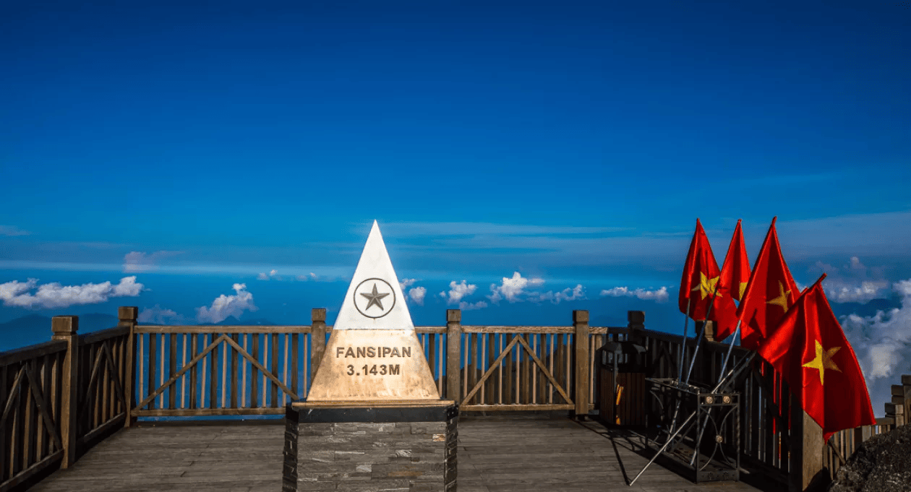

FANSIPAN - Nóc nhà của Đông Dương
Đối với những người yêu thích mạo hiểm, việc chinh phục đỉnh Fansipan là một trải nghiệm không thể bỏ qua. Với quang cảnh tuyệt đẹp từ trên cao, bạn sẽ được thưởng ngoạn toàn cảnh dãy núi Hoàng Liên Sơn trùng điệp, những thung lũng mờ sương và những cánh rừng nguyên sinh kỳ vĩ.

Hành trình lên đỉnh Fansipan có thể mất từ 2 đến 3 ngày đối với các trekker, nhưng với sự phát triển của hệ thống cáp treo Fansipan, chuyến đi giờ đây trở nên dễ dàng hơn rất nhiều. Cáp treo Fansipan không chỉ giúp rút ngắn thời gian lên đỉnh mà còn cho phép bạn chiêm ngưỡng cảnh quan thiên nhiên tuyệt đẹp, từ những rừng cây nguyên sinh đến những đám mây bồng bềnh giữa núi.
Không chỉ là điểm đến dành cho những tín đồ ưa mạo hiểm, Fansipan còn là một khu du lịch hấp dẫn với các công trình kiến trúc đặc sắc như chùa Trình, tượng Phật Bà Quan Âm, cùng với các hoạt động giải trí, văn hóa phong phú. Fansipan Legend là nơi bạn có thể thưởng thức những món ăn đặc sản Tây Bắc, tham gia các lễ hội văn hóa và tìm hiểu về những nét đẹp truyền thống của các dân tộc thiểu số.